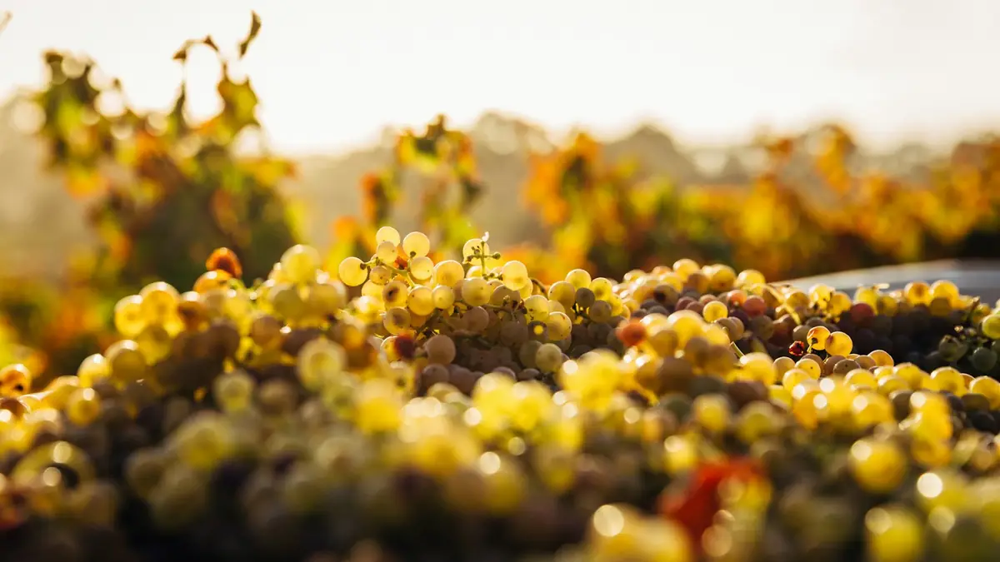

Home › Wine stories › Noble Rot: How Botrytis Cinerea Gave Us Sauternes and Tokaji
Noble Rot: How Botrytis Cinerea Gave Us Sauternes and Tokaji

Photo: Thomas Schaefer on Unsplash
A grey fungus that ruins most fruit can, in the right autumn mists, turn white grapes into the world's greatest sweet wines. Here is how noble rot works.
Most growers dread the sight of mould on their grapes. Botrytis cinerea, a grey fungus, is normally a disaster: in a long, damp spell it spreads through bunches as grey rot, splitting berries and spoiling any wine made from them. Yet the very same organism, given a different kind of weather, is responsible for some of the most celebrated wines on earth. When it behaves well, winemakers give it a kinder name: noble rot.
The difference is all in the timing. The fungus needs moisture to take hold, but if the air then turns dry it cannot run riot. The perfect pattern is damp, misty mornings followed by warm, sunny afternoons, repeated day after day in early autumn. Under those conditions the spores settle on ripe, thin-skinned white grapes and pierce the skins with tiny pores, without bursting the berries open.
What happens next is a small miracle of chemistry. Water escapes through those pores and the grapes slowly shrivel, losing more than half of their juice. Sugar, acidity and flavour are concentrated in what remains. The fungus also eats some of the acid and leaves behind glycerol, which gives the finished wine its silky, almost oily texture, plus aromas of honey, apricot, quince and raisin that ordinary late-picked grapes never develop. Because acidity stays lively, the best examples taste vibrant rather than syrupy.
Nobody knows exactly who first dared to press these mouldy-looking berries, but Hungary has the strongest claim. In Tokaj, a written record from 1571 already treats aszú, the local word for shrivelled botrytised grapes, as something to be kept apart from the normal crop. A much-loved legend credits Máté Szepsi Laczkó with making the first true Tokaji Aszú around the 1630s after the harvest was delayed by fear of Turkish raids, though the details are uncertain.
Germany has its own founding tale. In 1775 the winemakers of Schloss Johannisberg in the Rheingau had to wait for permission from the Prince-Bishop of Fulda before picking. The courier carrying the order arrived weeks late, by which time the Riesling grapes were shrivelled and rotten. They were pressed anyway, the wine was superb, and the estate still honours the tardy rider with a statue. Whether every detail is true or not, the episode is celebrated as the birth of Spätlese, or late harvest.
In Sauternes, south of Bordeaux, nature provides the mists on cue. The cold little River Ciron flows into the warmer Garonne, and from late summer their meeting breeds fog that lingers over the vineyards each morning. The rot never arrives evenly, so pickers pass through the same rows several times, often four to six, choosing only the bunches or even single berries that are ready. The result is tiny yields: at Château La Tour Blanche, they reckon on roughly one glass of wine per vine.
That painstaking work is why great botrytised wines cost what they do, and why they reward a little attention. To taste noble rot for yourself, compare a Sauternes or Barsac made mainly from Sémillon with a 5 or 6 puttonyos Tokaji Aszú from Furmint, or a German Riesling Beerenauslese. Serve them well chilled in small glasses, with blue cheese, foie gras or a not-too-sweet fruit tart, and look for that unmistakable thread of honey and apricot: the signature of a helpful fungus.
Sources
- Noble rot – Wikipedia
- Botrytis-affected grapes produce some alluring wines – Decanter
- History of wine in 100 bottles: Tokaji 1571 – Decanter
- Historical secrets about the Tokaji Aszú – Hello Hungary
- Schloss Johannisberg – Wines of Germany
- The vineyard: mastery of nature – Château La Tour Blanche
The Wine Reference newsletter
New wines, stories and career guides, one email a week at most.
Over 18s only. Unsubscribe any time with one click. Your email is stored securely by Kit and never shared.
Support The Wine Reference
This guide is free, with no paywall. If it helped you choose a bottle, you can buy me a glass and keep it growing.
🍷 Buy me a glass